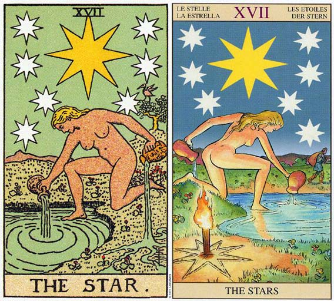

塔罗牌星星（The Star）解释
相关语：希望 对应星象：水瓶座
星星牌意味创造力和对生命的可能性的信心。星星 THE STAR 代表信心希望及和平，经历变动后的平静，拥有了自由寻回自己及真正未来。逆位代表空虚，寂寞和失去信心。
经历高塔的变动之后，现在已进入宁静状态。星星是一张代表对自己及对人生的各种可能性深具信心的牌。在经历一番情感的动乱之后，一种和平及空虚的感觉随即回来。这并不是一种负面的空虚感，而是没什么特别的事情需要去担心或解决。在高塔中经常发现的迫切感，如今已被一种沉静、和平的感觉所取代了。
这张牌上面的女人提着两个水壶。她将其中一壶里的水倒进水池中，而另一壶则倒在陆地上。天空很晴朗，有八颗星星，每一颗星星都有八个角，清晰可见。有一只展翅欲飞的朱鹭坐在一棵树上，这朱鹭是透特（Thoth）的象形符号或象征，透特是古埃及的时间守护神，也是“阿卡沙秘录”（Akashicreconrds）的监护者，那是为众神和医疗者的守护神而抄写的纪录。
星星是一张代表治疗、内在治疗，以及了解你这一世真正目的的牌。所有的物欲都已经在魔鬼牌中获得解决，而且在高塔牌中你也已经击溃那些不切实际的信仰，所以到了星星牌，你已有追求你真正目的的自由了。你可以自由的用心去倾听世界的心，你可以倾听你内在的需求，让它把宇宙的计划表达出来，也可以进到水池里面（透过潜意识心智运作的潜意识层面），汲取你要这么做所需具备的知识和能量。
每当你从那创造性的来源（水池）中汲取灵感，产生某些确切而实际的东西时，你所创造出来的东西就会有一部分直接流回到来源（请注意从她左手水壶流注到地面的水，流回到了水池当中）。
于是在世界另一角落的期他人就能接近你的观念了，因为它们被贮存在水池里面。荣格（Corl Jung）称此为“集体潜意识”（Collective unconcious）。也被称为世界的灵魂或宇宙的记忆。在这里透特之所以是星星的一部分，道理也在此，因为他是掌管“阿卡沙秘录”的神祗——这秘录记载着众生所有的活动，包括曾经活着和将要活着的所有生命。
星星指引了一条直通潜意识之路，在女教皇牌中，由于有布幔将她和水池分隔开来，因此她只能隐约感觉它的存在。星星的八个角意指伴随透特的八个神。八是一个代表力量和再生的数字，而由于透特是医疗者的守护神，所以也被视为治愈自己的象征。
星星可代表占星学上的水瓶座，宝剑国王也是，象征性稍微弱一点的是宝剑的其它宫廷牌。水瓶座的一项课题是发现自由，以刺透介于意识与潜意识之间的布幔，并粉碎存在于真理与传统之间的狭隘思想。其课题还包括认清我们内在的主宰（潜意识），并将这股能量导引到身体上来。这通常会遭到反对，内心的反对源于你对传统的尊重，而外在的反对则来自你对改变的自然抗拒。
星星（The Star）牌面解释
这是一张充满希望的牌。在希望之星——天狼星的照耀下，希望女神把圣水瓶中的希望圣水倒入象征潜意识的水池中。她知道人们是如此地需要希望，所以当一瓶圣水倒完时，她又在倒另一瓶。只要有希望人们才能有足够的动力去完成许多事，所以说希望就是人类的活力之源。
让我们奉献出所有的爱，尽管是在黑夜但漫天的星星给我们指引方向，在星光的指引下走向光明的未来。星星的含义中还有一点是很容易被忽略的，这就是“怀孕”的意思。
星星（The Star）正位解释
前途光明、充满希望、想象力、创造力、幻想、满足愿望、水准提高、理想的对象、美好的恋情
当牌面正立时，代表当你在事业上得到希望的能量时，前途会无比光明。在感情方面，你对自己很有信心，对两人的关系也抱有乐观的态度，相信自己能把握主动权，并努力追求对方，你们很可能就是命中注定的那一对。
星星（The Star）逆位解释
挫折、失望、好高骛远、异想天开、仓皇失措、事与愿违、工作不顺心、情况悲观、秘密恋情、缺少爱的生活
当牌面倒立时，在事业上，你不要全部依靠别人的给予，因为你还有希望在心中燃烧，只有靠自己才有真正的发展动力。感情方面你俩无法彼此信任，感觉无法把自己托付给对方，也许你们退一步，都冷静一下就能找出解决问题的途径，因为答案就在你们的心中。
大体上的意义
高塔牌除去某些你相信对生命有价值的东西，星星则是一张代表重新点燃希望的牌。它代表相信明天会更好的内在信心。你可以直接体验潜意识，而不是它的种种符号或意象。你可以体验这种强而有力的能量，并将它导入你的生命中。例如，艺术家利用这种能量来工作，以创作某些足以触动观赏者心情和灵魂的作品。它是一张代表信心、希望和内在平静的牌。
就普通角度来看，星星可能暗示一段假期或一段你能感觉不慌不忙、心平气和的时光。伴随这张牌而来的是一种“有余裕去思想及行动”的感觉。在这段期间内，你了解你就是潜意识和有形世界之间的联系。你选择什么东西来表现潜意识，完全由你决定，于是你最好的作品或最精彩的表现，是来自和潜意识最清楚的沟通。
倒立的星星
星星倒立意味你目前并没有接触到你潜意识能量的来源，而且可能会觉得受限于生命，或和你创造力的来源失去联系。这张牌可代表一位艺术家或以创意为职业者，他似乎无法提出新的构想。目前你缺乏灵感，因为你触碰不到你的潜意识。
可能你会觉得需要休息一阵子，放个假，或有更多的自由，但是你所需要的应该是心灵的自由，而不是肉体的自由。当星星出现倒立时，意味着和生命或世界的灵魂联系被切断了。因此空虚、寂寞，或退却到智力中的情形均可能发生，这会缺乏“事情将来会获得改善”的信心。
它也可能表示你失去了你的目的，也就是你在这一辈子所应该做的事。事情既没有办法为你带来以往的满足，而你也无法给它们和以往一样的承诺。现在该是返回高塔的时刻了，这样你才能够排除那些与你生命不再有价值的东西，进一步发现一种和潜意识清晰、简单的连结。
两性关系上的意义
星星暗示你对这个关系有信心，相信事物都会是乐观的。你有足够的自由和空间，来实现你自己的命运，而且处于一种爱的关系中。星星可能是在形容一种对加强潜意识及意识世界之联系有帮助的两性关系。换句话说，在一个提供支持和自由的两性关系中，你可以生活在你的真理中，或做真正的自己。
这张牌可能是暗示和伴侣一起度假，或在结伴关系中，你拥有自主的空间和地位。因果循环也是这张牌的隐喻，所以你们很可能是命中注定要在一起的，或注定要经历在这段关系中，将显现的种种事件。